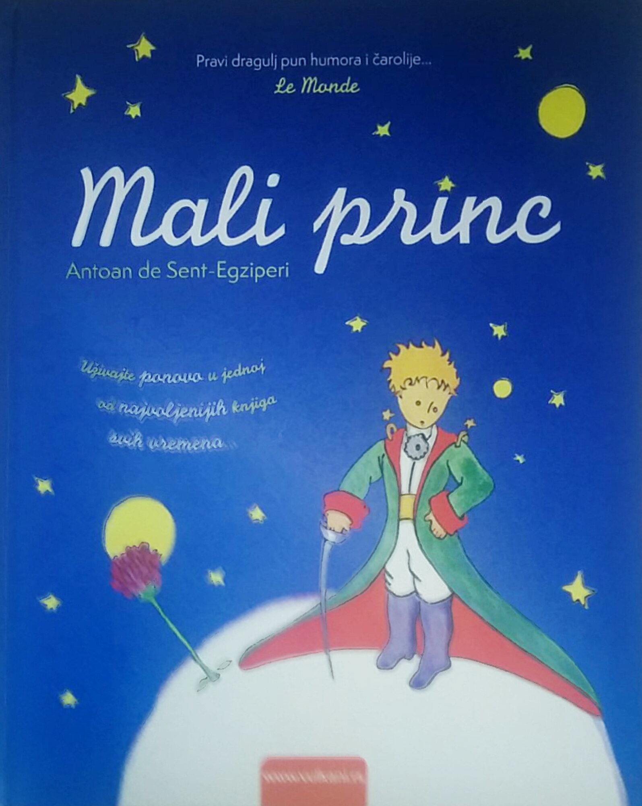
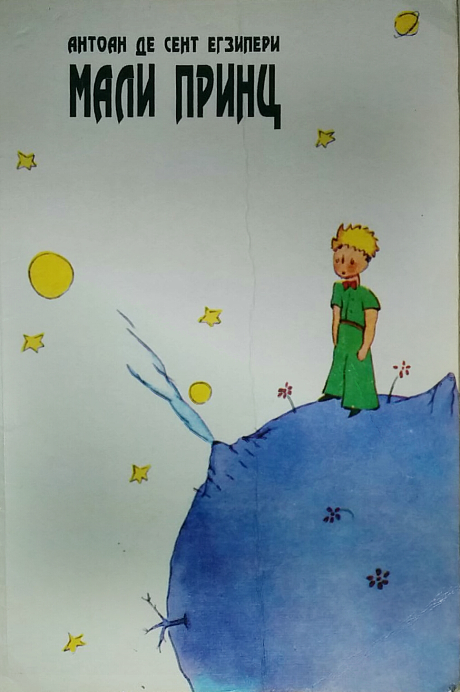
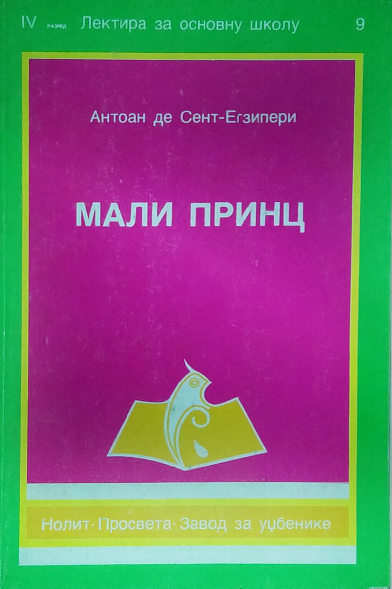
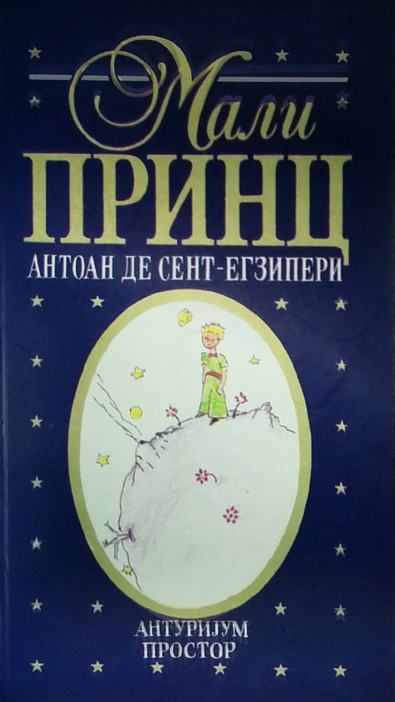

Mali Princ - Marinine knjige
Jezik
Language
Version
Image
1
Srpski
Serbian

2
Srpski ćirilica
Serbian cyrilic
1

3
Srpski ćirilica
Serbian cyrilic
2

4
Srpski ćirilica
Serbian cyrilic
3

##BROJ##
##IME NA SRPSKOM##/td>
##IME NA ENGLESKOM##
##VERZIJA ILI PRAAZNO##
Arapski
Baskirski
Bosanski
Bugarski
Bugarski 2
Engleski
Esperanto
Francuski
Filipinski
Filipinski (bicol)
Grčki
Hebrejski
Hindi
Holandski
Italijanski
Kazaski
Katalonski
Kineski
Kreolski (chavacano)
Kurdski
Latinski
Letonski
Madjarski
Makedonski
Milanski dijalekt
Moliški
Nemački
Osmanski turski
Poljski
Portugalski (Brazil)
Prekomurski
Ruski
Sanskrit
Slovački
Slovenački
Španski
Staroegipatski
Starogrcki
Švedski
Tibetanski
Toba
Turski
Vijetnamski